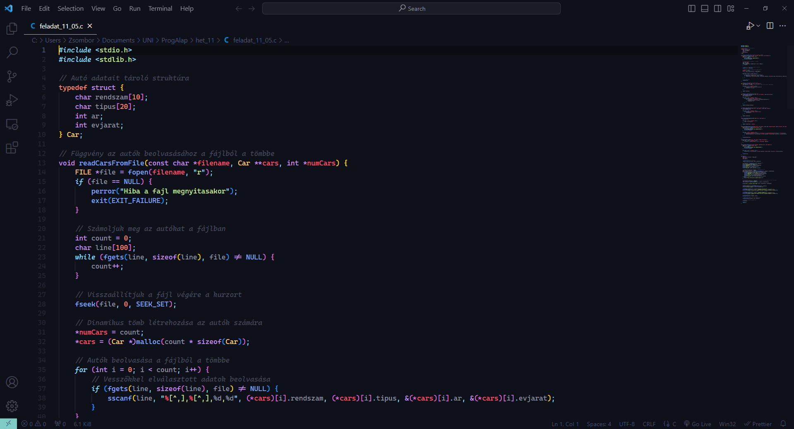

A "Programozás Alapjai" tárgy a számítógépes programozás alapvető fogalmait, elveit és gyakorlati készségeit tanítja meg. A kurzus célja, hogy a hallgatókat bevezesse a programozás világába, és megalapozza a számítógépes programozásban való jártasságukat.
A kurzus általában tartalmaz egy gyakorlati projektet, ahol a hallgatóknak lehetőségük van alkalmazni az általuk tanultakat egy valós probléma megoldására.
A "Programozás Alapjai" tárgy segít a hallgatóknak elsajátítani az alapvető programozási készségeket, amelyekre további számítógépes tudományos és műszaki területeken van szükségük. A tanfolyam általában használ egy vagy több programozási nyelvet a gyakorlatokhoz, például Python, Java, vagy C++.
Válaszd ezt a tárgyat, ha érdekel a számítógépes programozás világa, és szeretnél mélyebb betekintést nyerni a kódolás alapjaiba!